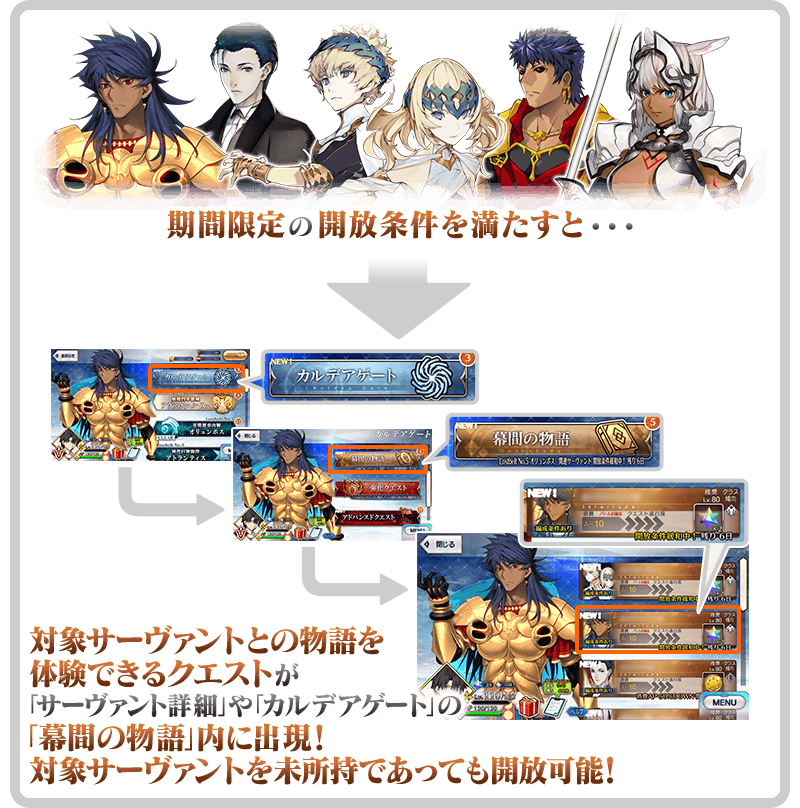
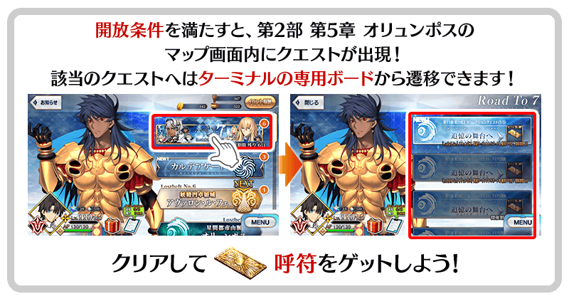
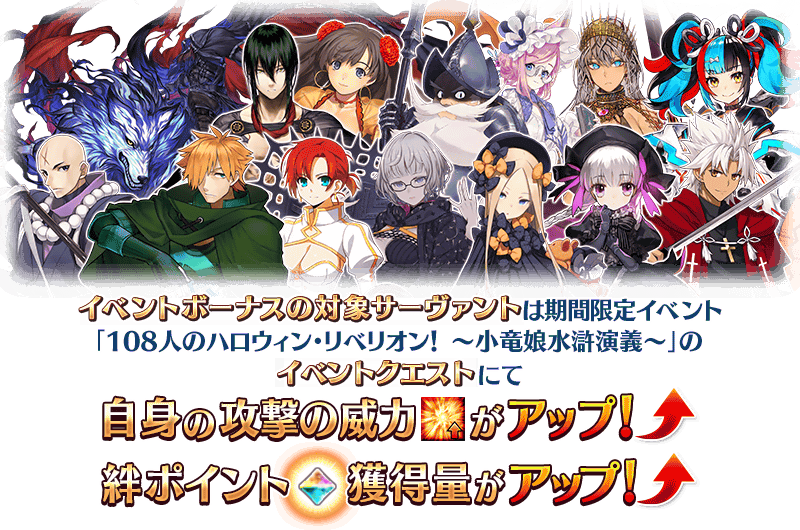
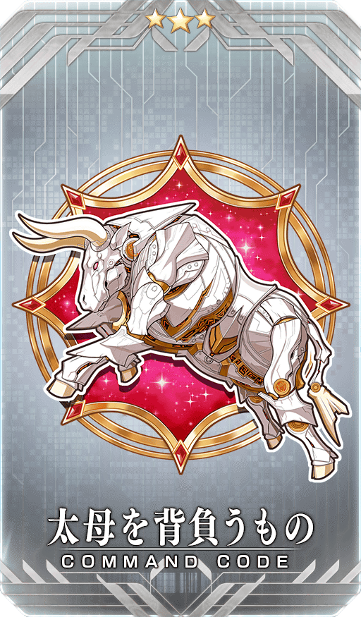
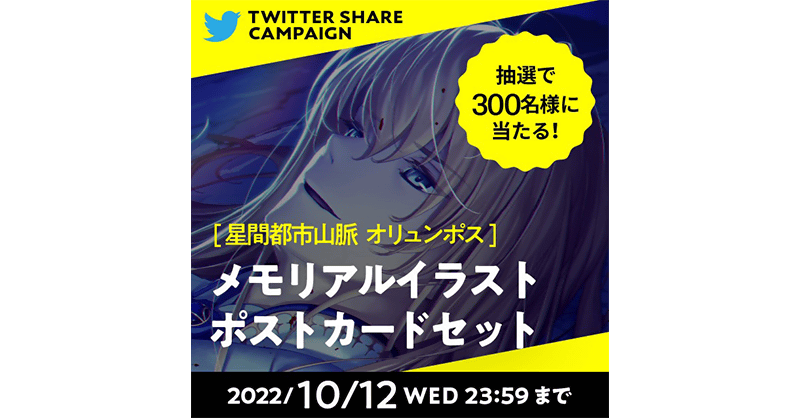

【10月7日(五) 21:00更新】
【公告的主要追記・更新履歴】 ■下次活動加成的對象從者追加！(10/7追記)NEW
為了與更多的御主迎接預定2022年開幕的第2部 第7章而開始的宣傳活動「Road to 7」。舉辦其第6彈「Road to 7 [Lostbelt No.5 奧林帕斯]」！
靠各式各樣的措施聲援通過第2部 第5章「Lostbelt No.5 星間都市山脈 奧林帕斯 擊落神之日」！
另外，對於已經通過第2部 第5章「Lostbelt No.5 星間都市山脈 奧林帕斯 擊落神之日」的玩家，本次也配信回顧印象深刻的關卡「追憶關卡」、超高難易度的「超級追憶關卡」！
對能力有自信的御主請以通過超高難易度關卡為目標，務必試著挑戰！
◆宣傳活動舉辦期間◆
2022年10月5日(三) 17:00～10月12日(三) 11:59
※本頁面皆為開發中圖片。會有與實際圖片相異的情況。
【10月7日(五) 21:00追記】
※在2018年12月31日(二) 23:00以後新配信的主線故事及期間限定活動、一部份關卡、宣傳活動及召喚中，會顯示隱藏真名的對象從者真名。
【10月7日(五) 21:00追記】
預定開幕的期間限定活動「108人的萬聖節・叛亂！ ～小龍娘水滸演義～」的參加條件也預定為通過第2部 第5章「Lostbelt No.5 星間都市山脈 奧林帕斯 擊落神之日」，藉此機會以通過為目標吧！
【「Road to 7 [Lostbelt No.5 奧林帕斯]」獨有的宣傳活動】
■「Lostbelt No.5 奧林帕斯」關聯從者的「幕間物語」就算未召喚從者也開放！
■「Lostbelt No.5 奧林帕斯」追憶關卡舉辦！
■在御主任務追加【Road to 7 [Lostbelt No.5 奧林帕斯]】任務！
■在程式起動時播放「Lostbelt No.5 奧林帕斯」特別影像！
【主線故事進行＆從者培育的機會】
■第2部 第5章 奧林帕斯為止的主線關卡的消耗AP1/4！
■一部份自由關卡的初次通過為止的消耗AP1/2！
■關聯從者的「Lostbelt No.5 奧林帕斯」自由關卡的絆點數獲得量提升！
■關聯從者的強化關卡與幕間物語的消耗AP1/2！
■關聯從者的強化大成功率・極大成功率2倍！並且獲得經驗值也2倍！
■關聯從者的友情點數獲得量2倍！
【達文西工房充實】
■關聯從者的指令紋章在達文西工房的「魔力稜鏡交換」追加！
【「Road to 7」最新情報】
■公開第2部 第5章 奧林帕斯的有印象名場景的插圖！
■投稿第2部 第5章 奧林帕斯的感想就贈送回憶插圖的明信片！
■接觸第2部 第5章 奧林帕斯故事的談話節目「Spotlight Lostbelt No.5 奧林帕斯」
第2部 第5章「Lostbelt No.5 星間都市山脈 奧林帕斯 擊落神之日」關聯從者的「幕間物語」，以期間限定變成「就算未持有對象從者也能開放」！
「幕間物語」的開放條件也與平常時的開放條件不同，會變成期間限定的特別開放條件。
務必藉此機會通過對象從者的「幕間物語」吧！

◆舉辦期間◆
2022年10月5日(三) 17:00～10月12日(三) 11:59
※關卡通過時的報酬內容不會變化。
【對象從者・幕間物語】
| 對象 從者 |
對象 「幕間物語」 |
通過報酬 | 期間限定開放條件 | |
|---|---|---|---|---|
| ★5(SSR) 狄奧斯庫洛伊 |
第1節 |

|
聖晶石 2個 | 通過特異點F |
| ★5(SSR) 羅慕路斯＝奎里努斯 |
第1節 |
|
聖晶石 2個 | 通過終局特異點 |
| ★5(SSR) 夏洛克・福爾摩斯 |
第1節 |

|
技能強化 |
Lostbelt No.3 通過序幕(プロローグ) intro.3-4 |
| ★4(SR) 凱妮絲(Lancer) |
第1節 |
|
技能強化 |
通過Lostbelt No.5 奧林帕斯 |
| ★2(UC) 卡利古拉 |
第1節 |
|
聖晶石 2個 | 通過第二特異點 |
※在滿足期間限定的開放條件後通過「幕間物語」時未持有對象從者的情況，在入手對象從者的時間點會反映強化內容。 ※對象從者的「幕間物語」就算在未持有的狀態下通過的情況，會計算在Extra任務的進行度。 ※對象從者的「幕間物語」，在未通過的狀態超過舉辦期間的情況，對象從者的「幕間物語」會回到未開放，切換成平常的開放條件。 ※關卡通過時的報酬內容沒有變化。 ※已經通過對象從者的幕間物語的情況，無法再度遊玩。
通過第2部 第5章「Lostbelt No.5 星間都市山脈 奧林帕斯 擊落神之日」的話才能挑戰，舉辦從第2部 第5章「Lostbelt No.5 神代巨神海洋 亞特蘭提斯 擊落神之日」之中集合留有印象戰鬥的「追憶關卡」！

「追憶關卡」中，由於在戰鬥的前後也會做為文字冒險部份播放對話場景，可靠戰鬥與文字冒險部份雙方來回顧第2部 第5章「Lostbelt No.5 星間都市山脈 奧林帕斯 擊落神之日」。
◆調整難易度的「超級追憶關卡」也登場！◆
朝向上級者而調整「追憶關卡」的超高難易度的「超級追憶關卡」也登場！
「超級追憶關卡」由於是通過該「追憶關卡」後才能挑戰，對能力有自信的御主請務必試著挑戰！
通過「超級追憶關卡」的話能入手星見茶壺！
◆「星見茶壺」使用期限◆
2022年10月5日(三) 17:00～10月19日(三) 11:59
※「星見茶壺」有使用期限，超過使用期限「星見茶壺」會消失，敬請注意。
◆舉辦期間◆
2022年10月5日(三) 17:00～10月12日(三) 11:59
「追憶關卡」及「超級追憶關卡」就算通過後也不會消失，可以變更從者和概念禮裝的組合等後無限次挑戰。 ※關卡通過報酬、戰利品、御主EXP、魔術禮裝EXP、絆點數只可在初次通過時獲得。
◆追憶關卡一覧◆
| 關卡名 | 開放條件 | 通過報酬 | |
|---|---|---|---|
| 第11節 進行度3 追憶關卡(1/3) | 通過第2部 第5章「Lostbelt No.5 星間都市山脈 奧林帕斯 擊落神之日」 |

|
呼符1張 |
| 第13節 進行度2 追憶關卡(2/3) | 通過第11節 進行度3 追憶關卡(1/3) |
|
呼符1張 |
| 第23節 進行度2 追憶關卡(3/3) | 通過第13節 進行度2 追憶關卡(2/3) |
|
呼符1張 |
| 第11節 進行度3 超級追憶關卡(1/3) | 通過第11節 進行度3 追憶關卡(1/3) |

|
星見茶壺10個 |
| 第13節 進行度2 超級追憶關卡(2/3) | 通過第13節 進行度2 追憶關卡(2/3) |
|
星見茶壺10個 |
| 第23節 進行度2 超級追憶關卡(3/3) | 通過第23節 進行度2 追憶關卡(3/3) |
|
星見茶壺10個 |
下述的期間中，在「御主任務」的「限定」標籤內以期間限定追加「【Road to 7 [Lostbelt No.5 奧林帕斯]】任務」。
通過所有任務的話，可得到獸之足跡3個、靈脈石5個、星見茶壺5個、英靈結晶・流星之芙芙ALL★4(HP)1張、英靈結晶・日輪之芙芙ALL★4(ATK)1張！
◆舉辦期間◆
2022年10月5日(三) 17:00～10月12日(三) 11:59
◆領取期間◆
2022年10月5日(三) 17:00～10月19日(三) 11:59
◆追加任務◆
| 任務名稱 | 入手道具 | |
|---|---|---|
|
【Road to 7 [Lostbelt No.5 奧林帕斯]】 通過『Lostbelt No.5 奧林帕斯』的「第1節」 |

|
獸之足跡 3個 |

|
靈脈石 5個 | |
|
【Road to 7 [Lostbelt No.5 奧林帕斯]】 通過1次『Lostbelt No.5 奧林帕斯』的自由關卡 |
|
星見茶壺 5個 |
|
【Road to 7 [Lostbelt No.5 奧林帕斯]】 通過2次『Lostbelt No.5 奧林帕斯』的自由關卡 |

|
英靈結晶・流星之芙芙ALL★4(HP) 1張 |
|
【Road to 7 [Lostbelt No.5 奧林帕斯]】 通過3次『Lostbelt No.5 奧林帕斯』的自由關卡 |

|
英靈結晶・日輪之芙芙ALL★4(ATK) 1張 |
※請注意舉辦期間與領取期間有所差異。 ※請注意與每週日23:00更新的普通任務(Weekly)不同欄位，超過領取期間的話無法入手報酬。 ※就算達成「【Road to 7 [Lostbelt No.5 奧林帕斯]】任務」，也不會計算在普通任務(Weekly)的任務進行度。 ※根據主線故事的進行度會有無法達成「【Road to 7 [Lostbelt No.5 奧林帕斯]】任務」的情況。
※「靈脈石」只可在包含亞種特異點的主線故事中使用。
敬請注意無法在期間限定活動、Main Interlude、追憶關卡及超級追憶關卡中使用。
◆能使用「靈脈石」的對象關卡◆
・主線關卡第1部(到終局特異點)
・亞種特異點(從Ⅰ到Ⅳ)
・主線關卡第2部(到第6.5章)
※接關道具「靈脈石」有使用期限。
超過使用期限「靈脈石」會消失，敬請注意。
◆「靈脈石」使用期限◆
2022年10月5日(三) 17:00～10月19日(三) 11:59
自2022年10月5日(三) 17:00，在最初啟動程式時會自動播放第2部 第5章「Lostbelt No.5 星間都市山脈 奧林帕斯 擊落神之日」的特別影像「Re:Discover Movie Lostbelt No.5 奧林帕斯」。 ※特別影像「Re:Discover Movie Lostbelt No.5 奧林帕斯」會登錄到個人空間(マイルーム)的圖鑑(マテリアル)，在「Road to 7 [Lostbelt No.5 奧林帕斯]」的宣傳活動期間結束後刪除。
◆配信期間◆
2022年10月5日(三) 17:00～10月12日(三) 11:59
特別影像「Re:Discover Movie Lostbelt No.5 奧林帕斯」在配信期間內初次啟動程式時會自動播放。
特別影像「Re:Discover Movie Lostbelt No.5 奧林帕斯」包含第2部 第5章 奧林帕斯的一部份劇透。關於尚未通過到第2部 第5章 奧林帕斯的玩家，敬請見諒包含一部份劇透。
※未經權利人同意，禁止收錄在本篇內使用的圖片・聲音・影片後公開。 ※進行無斷轉載・分享至影片網站等的情況，會有追究法律責任的可能性。 ※本影片根據使用裝置的音量設定會有一部份演出以較大音量播放的情況。請先事前確認使用裝置的音量來享受。 ※使用行動網路的情況，敬請注意流量限制。
【10月7日(五) 21:00追記】
期間限定活動「108人的萬聖節・叛亂！ ～小龍娘水滸演義～」的期間中，一部份的從者在活動關卡中會得到「自身的攻擊威力提升」與「絆點數獲得量提升」的加成！
※活動加成的效果量因從者而異。

【活動加成的對象從者】
| 職階 | 稀有度 | 從者名 |
|---|---|---|
| Saber | ★★★★ | 伊莉莎白・巴托里〔Brave〕 |
| ★★★★ | 柳生但馬守宗矩 | |
| ★★★ | 弗格斯・馬克・羅伊 | |
| Archer | ★★★★★ | 清少納言 |
| ★★★★ | 潔諾比亞 | |
| ★★★ | 羅賓漢 | |
| Lancer | ★★★★ | 伊莉莎白・巴托里 |
| ★★★★ | 秦良玉 | |
| ★★★★ | 唐吉訶德 | |
| ★★★ | 寶藏院胤舜 | |
| Rider | ★★★★★ | 太公望 |
| ★★★★ | 伊莉莎白・巴托里〔灰姑娘〕 | |
| ★★★ | 布狄卡 | |
| ★★★ | 曼迪卡爾多 | |
| ★★ | 愛德華・蒂奇 | |
| Caster | ★★★★★ | 紫式部 |
| ★★★★ | 伊莉莎白・巴托里〔萬聖節〕 | |
| ★★★★ | 童謠 | |
| ★★★ | 阿維斯布隆 | |
| Assassin | ★★★★ | 燕青(新宿的Assassin) |
| ★★★ | 荊軻 | |
| ★★★ | 風魔小太郎 | |
| ★ | 瑪塔・哈里 | |
| Ruler | ★★★★★ | 天草四郎 |
| Avenger | ★★★★ | 海森・羅伯(新宿的Avenger) |
| Alterego | ★★★★ | 機械伊莉醬 |
| ★★★★ | 機械伊莉醬Ⅱ號機 | |
| Foreigner | ★★★★★ | 艾比蓋兒・威廉斯 |
| ★★★★★ | 雅克・德・莫萊 |
※就算成為對象從者也會有未在本活動的主線劇本登場的情況。 ※自10月7日(五) 21:00，在從者選擇畫面和從者強化畫面等，追加活動加成篩選器。由於是只顯示於活動活躍從者的便利功能，敬請活用。
下述的期間中，主線關卡第2部 第5章 奧林帕斯為止的消耗AP變成1/4！(就算在戰鬥中撤退的情況，也會是同様的消耗量)
尚未通過主線關卡的御主，務必活用此機會吧！
【10月7日(五) 21:00追記】
預定開幕的期間限定活動「108人的萬聖節・叛亂！ ～小龍娘水滸演義～」的參加條件也預定為通過第2部 第5章「Lostbelt No.5 星間都市山脈 奧林帕斯 擊落神之日」，藉此機會以通過為目標吧！
◆舉辦期間◆
2022年10月5日(三) 17:00～10月12日(三) 11:59
◆對象關卡◆
主線關卡第1部(從特異點F到終局特異點)
主線關卡第2部 第5章 奧林帕斯為止
※現在到主線關卡第2部 第6章為止的消耗AP是永久變成1/2的狀態。因此，宣傳活動結束後，該主線關卡的消耗AP會變成1/2。 ※請注意亞種特異點(從Ⅰ到Ⅳ)、Main Interlude、自由關卡為對象外。
下述的期間中，第2部 第5章「Lostbelt No.5 星間都市山脈 奧林帕斯 擊落神之日」的自由關卡初次通過前AP消耗量變成1/2！(就算在戰鬥中撤退的情況，也會是同様的消耗量)
尚未通過該自由關卡的御主，請務必活用此機會！
◆舉辦期間◆
2022年10月5日(三) 17:00～10月12日(三) 11:59
◆對象關卡◆
第2部 第5章「Lostbelt No.5 星間都市山脈 奧林帕斯 擊落神之日」的自由關卡
※初次通過是指入手初次通過報酬的時間點。
本宣傳活動的期間中，下表的從者在第2部 第5章「Lostbelt No.5 星間都市山脈 奧林帕斯 擊落神之日」的自由關卡中，會得到「絆點數獲得量提升」的加成！
藉此機會提升對象從者的絆等級吧！
◆舉辦期間◆
2022年10月5日(三) 17:00～10月12日(三) 11:59
【絆點數加成的效果量與對象從者】
| 絆點數 獲得量 |
職階 | 稀有度 | 從者名 |
|---|---|---|---|
|
只限自身 ＋30% |
Saber | ★★★★★ | 狄奧斯庫洛伊 |
| ★★★★★ | 宮本武藏 | ||
| Lancer | ★★★★★ | 羅慕路斯＝奎里努斯 | |
| ★★★★ | 凱妮絲 | ||
| Rider | ★★★★★ | 歐羅巴 | |
| Berserker | ★★ | 卡利古拉 | |
| Ruler | ★★★★★ | 夏洛克・福爾摩斯 |
※自10月5日(三) 17:00，在第2部 第5章「Lostbelt No.5 星間都市山脈 奧林帕斯 擊落神之日」的自由關卡中，在從者選擇畫面追加加成篩選器。由於是只顯示加成對象從者的便利功能，敬請活用。 ※請注意在本宣傳活動中的加成篩選器並非全活動中的加成對象。
下述的期間中，第2部 第5章「Lostbelt No.5 星間都市山脈 奧林帕斯 擊落神之日」關聯從者的強化關卡與幕間物語中消耗AP變成1/2！(就算在戰鬥中撤退的情況，也會是同様的消耗量)
藉此機會通過尚未通過的從者強化關卡與幕間物語吧！
◆舉辦期間◆
2022年10月5日(三) 17:00～10月12日(三) 11:59
◆對象從者◆
| 職階 | 稀有度 | 從者名 |
|---|---|---|
| Saber | ★★★★★ | 狄奧斯庫洛伊 |
| ★★★★★ | 宮本武藏 | |
| Lancer | ★★★★★ | 羅慕路斯＝奎里努斯 |
| ★★★★ | 凱妮絲 | |
| Berserker | ★★ | 卡利古拉 |
| Ruler | ★★★★★ | 夏洛克・福爾摩斯 |
下述的期間中，在進行強化第2部 第5章「Lostbelt No.5 星間都市山脈 奧林帕斯 擊落神之日」關聯從者時，大成功(經驗值2倍加成)・極大成功(經驗值3倍加成)的發生率以期間限定變2倍，並且獲得經驗值也變2倍！
務必藉此機會強化對象從者吧！
◆舉辦期間◆
2022年10月5日(三) 17:00～10月12日(三) 11:59
◆對象從者◆
| 職階 | 稀有度 | 從者名 |
|---|---|---|
| Saber | ★★★★★ | 狄奧斯庫洛伊 |
| ★★★★★ | 宮本武藏 | |
| Lancer | ★★★★★ | 羅慕路斯＝奎里努斯 |
| ★★★★ | 凱妮絲 | |
| Rider | ★★★★★ | 歐羅巴 |
| Berserker | ★★ | 卡利古拉 |
| Ruler | ★★★★★ | 夏洛克・福爾摩斯 |

下述的期間中，在關卡開始時的支援選擇畫面，選擇其他御主的第2部 第5章「Lostbelt No.5 星間都市山脈 奧林帕斯 擊落神之日」關聯從者做支援情況、其他御主選擇自己的對象從者做支援情況，友情點數獲得量變成2倍。
藉此機會入手更多友情點數吧！
◆舉辦期間◆
2022年10月5日(三) 17:00～10月12日(三) 11:59
◆對象從者◆
| 職階 | 稀有度 | 從者名 |
|---|---|---|
| Saber | ★★★★★ | 狄奧斯庫洛伊 |
| ★★★★★ | 宮本武藏 | |
| Lancer | ★★★★★ | 羅慕路斯＝奎里努斯 |
| ★★★★ | 凱妮絲 | |
| Rider | ★★★★★ | 歐羅巴 |
| Berserker | ★★ | 卡利古拉 |
| Ruler | ★★★★★ | 夏洛克・福爾摩斯 |
※非好友的御主也是友情點數獲得量2倍的對象。 ※請注意NPC從者的情況為友情點數獲得量2倍的對象外。
為了記念「Road to 7 [Lostbelt No.5 奧林帕斯]」的舉辦，在達文西工房的「魔力稜鏡交換」永久追加下述「Lostbelt No.5 奧林帕斯」關聯從者的指令紋章。
就算已經持有對象指令紋章的情況，也可在「魔力稜鏡交換」獲得。
◆追加時間◆
2022年10月5日(三) 17:00～
◆在「魔力稜鏡交換」追加的指令紋章◆
|  |
★★★R |
◆追加道具(永久)◆
| 追加道具 | 能交換次數 | 1次交換所需的 魔力稜鏡數 |
|---|---|---|
| ★3(R)太母を背負うもの | 1次 | 300個 |
※在「魔力稜鏡交換」追加的指令紋章「★3(R)太母を背負うもの」為永久，沒有交換期限。

為了與更多的御主一起迎接預定2022年開幕的第2部 第7章而開始的企劃「Road to 7」。
介紹繪製第2部各章的插圖等一部份公開過的情報！
在「Road to 7」入口網站，於第2部 第5章 亞特蘭提斯的主線關卡留有印象的名場景插圖公開中！
插圖是由擔任角色設計的繪師所新繪製的作品！
與新插圖一同回顧第2部 第5章 奧林帕斯的名場面吧。
詳情請自「Road to 7」入口網站確認。
■「Road to 7」入口網站
https://roadto7.fate-go.jp/
從第2部 第5章 奧林帕斯的登場角色的登場角色之中，選擇喜愛的角色一同投稿回憶至Twitter吧！
將從在Twitter分享感想的各位之中，抽出300位贈送使用新繪製插圖的明信片套組！
■募集期間
2022年10月4日(二)～10月12日(三) 22:59
詳情請自「Road to 7」入口網站確認。
■「Road to 7」入口網站
https://roadto7.fate-go.jp/

決定播送接觸第2部各章故事結尾的談話節目「Spotlight Lostbelt」的第6彈。
做為第6彈的節目中，預定將第2部 第5章「Lostbelt No.5 星間都市山脈 奧林帕斯 擊落神之日」擺在焦點的特別談話。
來賓預定為小林千晃與鶴岡聡出演！
◆ご注意◆
「Spotlight Lostbelt No.5 奧林帕斯」的播送內容包含第2部 第5章 奧林帕斯為止的一部份劇透。關於尚未通過到第2部 第5章 奧林帕斯的觀眾，敬請見諒包含一部份劇透。
◆Spotlight Lostbelt No.5 奧林帕斯◆
送上將第2部 第5章「Lostbelt No.5 星間都市山脈 奧林帕斯 擊落神之日」擺在焦點的特別談話！
※預定在官方推特及下述平台播送。
■「Fate/Grand Order」官方推特
@fgoproject
■niconico生放送
https://live.nicovideo.jp/watch/lv338576854
■ABEMA
https://abema.tv/channels/abema-anime-3/slots/B6tw5FaRWvXUGo
■YouTube首播公開
https://youtu.be/NsMi4Nk_how
※10月5日(三) 19:30追記
◆播送日【2022年10月6日(四) 20:00～】◆
詳情請自「Road to 7」入口網站確認。
■「Road to 7」入口網站
https://roadto7.fate-go.jp/
【10月7日(五) 21:00更新】
其他還有，『「Lostbelt No.5 奧林帕斯」Pick Up召喚』以期間限定同時舉辦！
並且，期間限定活動「108人的萬聖節・叛亂！ ～小龍娘水滸演義～」也預定開幕！
關於詳情，請自下述橫幅確認。
■「Lostbelt No.5 奧林帕斯」Pick Up召喚詳細情報

■「108人的萬聖節・叛亂！ ～小龍娘水滸演義～」詳細情報